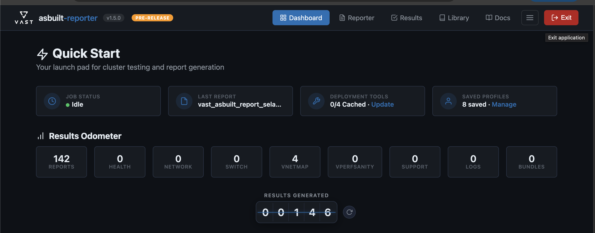
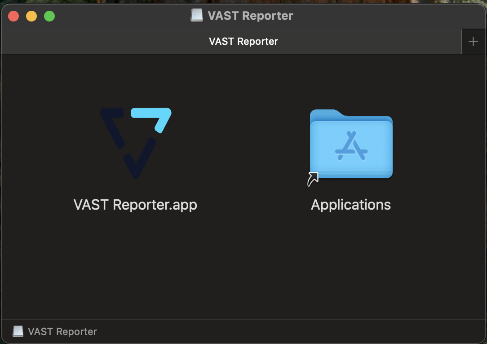
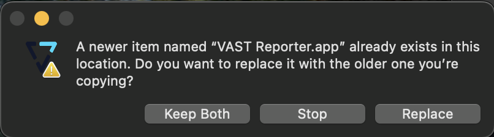
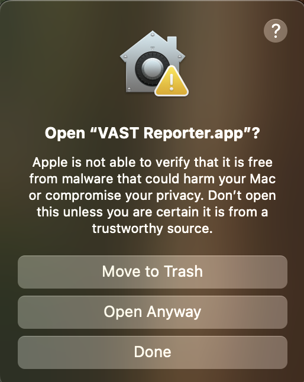

Quick Start Guide
Download, install, and launch the application on macOS or Windows in minutes.
Download, install, and launch the application on macOS or Windows in minutes.
Choose your path below. New installs and upgrades share most steps, but upgrades require exiting the running app and replacing the existing copy first.
Before replacing the app, you must fully quit the current version. In the app's navbar, click the Exit button (top-right corner), or click Exit application below the navigation bar.
Wait for the browser tab to close and the process to terminate before proceeding.

Download the latest VAST-Reporter-vX.Y.Z-mac.dmg from GitHub Releases. Double-click the DMG to mount it.
Drag VAST Reporter.app onto the Applications folder shortcut to install.

Since an earlier version is already installed, macOS will ask if you want to replace it. Click Replace to overwrite the old version with the new one.

On first launch, macOS Gatekeeper will block the app because it is not signed with an Apple Developer certificate. You'll see a dialog saying "VAST Reporter.app" Not Opened.
This is expected for internal tools distributed outside the App Store. Click Done — do not click "Move to Trash".

Open System Settings (Apple menu → System Settings) and navigate to Privacy & Security in the left sidebar.
Scroll down to the Security section. You'll see a message: "VAST Reporter.app" was blocked to protect your Mac.
Click the Open Anyway button next to the message.

A second confirmation dialog will appear asking if you really want to open the app. macOS includes a warning about unverified software.
Click Open Anyway to proceed. Do not click "Move to Trash" or "Done".

macOS requires administrator authorization to allow the unsigned app to run. Use Touch ID or click Use Password... and enter your Mac administrator password.
After authenticating, the app will launch and your browser will open automatically to localhost:5173.

The Windows build is distributed as a portable ZIP archive — no installer required. Extract, run, and go.
Download VAST-Reporter-vX.Y.Z-win.zip from GitHub Releases.
Right-click the ZIP file and select Extract All... Choose a destination folder (e.g., C:\Program Files\VAST Reporter or your Desktop).
Open the extracted folder and double-click vast-reporter.exe to launch.
On first launch, Windows SmartScreen may display a warning: "Windows protected your PC." This is expected for unsigned internal tools.
Click More info, then click Run anyway to proceed.
Your default browser will open automatically to localhost:5173. The app is ready to use.
To upgrade, close the running app, replace the extracted folder with the new version, and relaunch. The SmartScreen step will repeat for each new version.